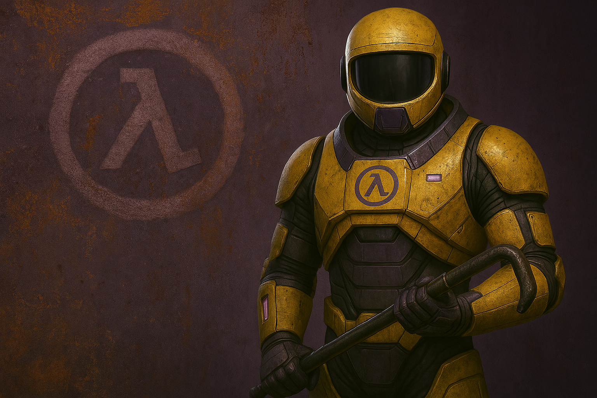
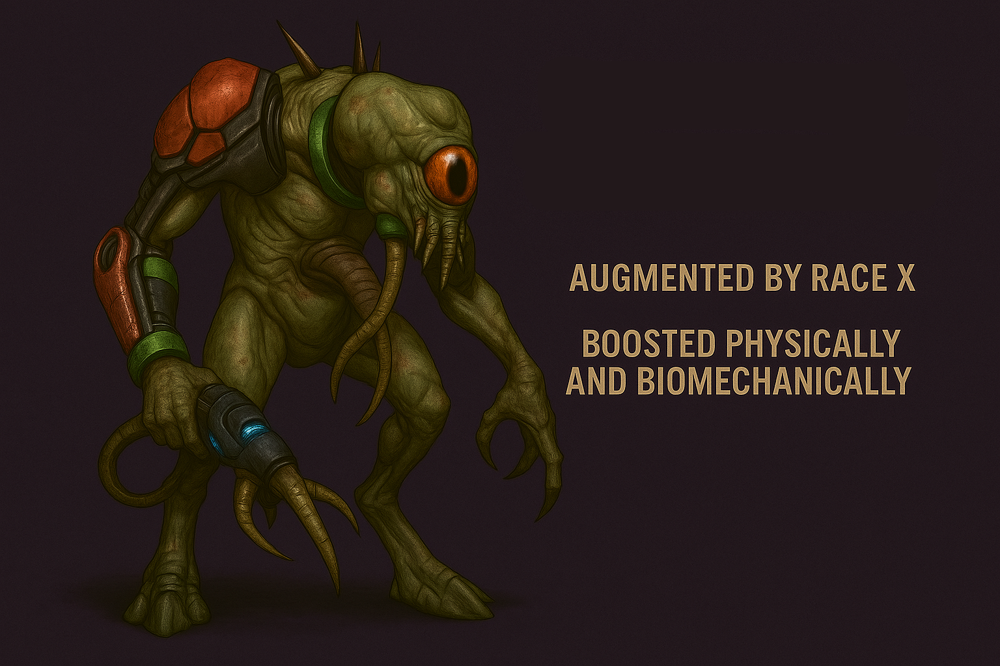
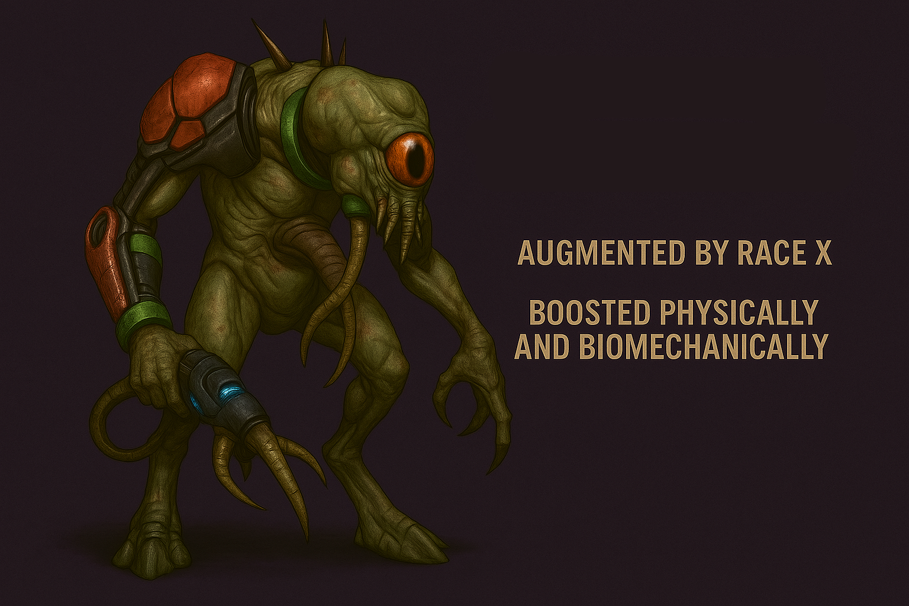

Présentation du mod
Echoes of the Rift est un projet de mod solo narratif pour Half-Life 1, qui vous plonge dans les prémices de la cascade de résonance. Vous incarnerez un scientifique isolé, pris dans un enchaînement d’événements interdimensionnels. Le mod mêle exploration, ambiance pesante, révélations et combats dans un univers enrichi.
Le personnage principal
Vous êtes le Dr Voos, un chercheur spécialiste des failles temporelles et des champs de résonance travaillant dans un des departements les plus secrets de black mesa. Assigné à des missions de terrain sur Xen, vous faites partie des rares agents équipés de l’ancien modèle HEV mk3 utilisé lors des premières expéditions. Votre mission : Explorer xen, trouver un moyen de retour, et surtout… survivre aux conséquences de vos propres découvertes.
Chronologie & chapitres
Le mod débute plusieurs mois avant Half-Life 1. Il suit un arc temporel unique : avant HL1, hors du temps dans le Monde X, pendant HL1 (cascade de résonance), et jusqu'à la fin d'Opposing Force. Voici les grandes étapes :
- Chapitre 1 : Observation à Black Mesa
- Chapitre 2 : Xen - la dimension hostile
- Chapitre 3 : Extraction du cristal pur
- Chapitre 4 : Vortex instable et Monde X
- Chapitre 5 : Retour à Black Mesa en ruines
- Chapitre 6 : Dernière expédition
Les nouvelles unités de Xen
Les unités de la Race X
 

Les armes disponibles
Le joueur aura accès à une combinaison d’armes humaines, biologiques et expérimentales, issues de Black Mesa, de Xen et du Monde X. (Illustrations à venir)
Screenshots